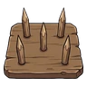
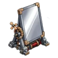
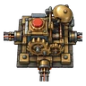
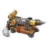
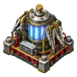

รายการกับดัก
พื้นฐาน พื้นฐาน
| ชื่อ | ประเภท | คำอธิบาย |
|---|---|---|
 แผ่นหนามไม้ | ดาเมจ | ศัตรูที่เหยียบได้รับดาเมจน้อย วางได้ไม่จำกัด |
N N
| ชื่อ | ประเภท | คำอธิบาย |
|---|---|---|
| ตรึง | ศัตรูที่เหยียบได้รับดาเมจน้อย และขยับไม่ได้ 3 เทิร์น ศัตรูตัวหนักและตัวลื่นหยุดไม่ได้ | |
| ตรึง | ศัตรูที่เหยียบจะขยับไม่ได้ 5 เทิร์น ไม่ได้ผลกับตัวหนักและตัวลื่น | |
| ล่อ | พอวางจะมีเสียงดัง ศัตรูทั้งชั้นจะมุ่งมาที่นี่เป็นเวลา 5 เทิร์น | |
| ดาเมจ | ศัตรูที่เหยียบได้รับดาเมจปานกลาง และขยับไม่ได้ 1 เทิร์น | |
| สถานะ | พอศัตรูเหยียบ ควันจะแผ่ ศัตรูใน 3×3 รอบๆ จะมองไม่เห็นเรา 3 เทิร์น และมองกับดักไม่ออกด้วย | |
| เคลื่อนที่ | ศัตรูที่เหยียบจะลื่นไปตามทิศที่เดินอยู่ 2 ช่อง | |
| ล่อ | พอวาง สัตว์ใน 4 ช่องจะเข้ามา พอถึงแล้วกินต่อเนื่อง 2 เทิร์น สัตว์ที่มองกับดักออกก็ยังสู้ความหิวไม่ได้ | |
| ป้องกัน | กลายเป็นกำแพงที่ผ่านไม่ได้ กันการโจมตีระยะไกลด้วย ถูกตี 3 ครั้งก็พัง | |
| สภาวะ | ศัตรูที่เหยียบจะ "เปื้อนน้ำมัน" 5 เทิร์น ไม่มีดาเมจ แต่ดาเมจกับดักไฟเป็น 2 เท่าและไหม้ต่อเนื่อง | |
| สภาวะ | แตกออกทำให้ 3×3 รอบๆ "เปียก" 5 เทิร์น ดาเมจกับดักสายฟ้าเป็น 1.5 เท่า และอาการชายาวขึ้น | |
| ตรึง | ดูดตัวโลหะของเครื่องจักรและหุ่นติดพื้น 3 เทิร์น ได้ผลกับตัวหนัก แต่ดูดหุ่นกวาดไม่ได้ | |
| สถานะ | พอเหยียบ เสียงดังและแสงจ้า หยุดเซนเซอร์เครื่องจักรและหุ่นใน 3×3 รอบๆ 3 เทิร์น และทำให้ซอมบี้มึนงง 3 เทิร์น | |
| ตรึง | พอเหยียบได้รับดาเมจน้อย ศัตรูที่พยายามปลดหรือกลืนจะโดนพื้นยุบ ขยับไม่ได้ 5 เทิร์น และได้รับดาเมจปานกลาง | |
| ดาเมจ | พอเหยียบ ดาเมจไฟฟ้าน้อยและชา 1 เทิร์น ได้ผลกับโฮโลแกรม ถ้าเปียกจะเป็น 1.5 เท่า |


R R
| ชื่อ | ประเภท | คำอธิบาย |
|---|---|---|
| พื้นที่ | พอเหยียบจะระเบิด ศัตรูบนพื้นใน 3×3 รอบๆ ได้รับดาเมจปานกลาง โดนตัวเองด้วย | |
| หน่วงเวลา | ระเบิดหลังวาง 3 เทิร์น ดาเมจสูงใน 3×3 รอบๆ โดนศัตรูที่บินด้วย | |
| ดาเมจ | พอเหยียบซุงจะแกว่ง ศัตรูในระยะ 3 ช่องตามทิศที่วางได้รับดาเมจปานกลางและถูกผลักไป 1 ช่อง | |
| ล่อ | พอวางจะกลายเป็นหุ่นไล่กา (ทนทาน 15) ศัตรูใน 7 ช่องจะเล็งหุ่นก่อนเรา | |
| สถานะ | พอเหยียบ 3×3 รอบๆ จะหลับ 4 เทิร์น โดนตัวเองด้วย พอโดนดาเมจก็ตื่น | |
| ต้านศัตรูบิน | ศัตรูที่บินผ่านจะตกลงพื้น 3 เทิร์น ระหว่างที่ตกอยู่ กับดักบนพื้นใช้ได้ผล | |
| เคลื่อนที่ | ศัตรูที่เหยียบจะลื่นไปจนชนกำแพง ระหว่างทางเหยียบกับดักอื่นได้ | |
| ดาเมจ | พอเหยียบ ดาเมจปานกลางในรูปกากบาท (บนล่างซ้ายขวา 2 ช่อง) | |
| ต้านศัตรูขุดดิน | พอศัตรูใต้ดินเข้ามาใน 2 ช่อง จะลากขึ้นพื้น ดาเมจสูง และสลบ 2 เทิร์น | |
| เคลื่อนที่ | ศัตรูที่เหยียบจะหันกลับหลังและมึนงง 1 เทิร์น 3 เทิร์นนั้นโล่ไม่ได้ผล | |
| CHAIN | พอศัตรูแตะด้าย กับดักของเราทั้งหมดใน 3 ช่องจะทำงานพร้อมกัน | |
| ดาเมจ | พอเหยียบประกายไฟกระเด็น ดาเมจน้อย (ไฟ) ศัตรูเปื้อนน้ำมันได้ดาเมจสูง+ไหม้ ศัตรูเปียกได้ผลน้อย | |
| ตรึง | ตาข่ายตกลงมาจากด้านบนใส่ศัตรูที่เหยียบ ทำให้ขยับไม่ได้ ยิ่งรูปร่างเหมือนคนยิ่งหยุดนาน (ซอมบี้ 6 เทิร์น / หุ่น 6 เทิร์น อื่นๆ 3 เทิร์น) หยุดตัวหนักและตัวลื่นได้ด้วย | |
| ตรึง | กรงตกลงมาครอบศัตรูที่เหยียบ ขังไว้ 8 เทิร์น ได้ผลกับตัวหนักและตัวถือโล่ ข้างในโจมตีไม่ได้ บอส 3 เทิร์น | |
| สถานะ | พอเหยียบ หมอกสีทองแผ่ออก ลบการเสริมพลังของศัตรูใน 3×3 รอบๆ และทำให้เชื่องช้า 3 เทิร์น (ความเร็วครึ่งหนึ่ง / ฟื้นฟูไม่ได้) | |
| สถานะ | พอวาง จะหยุดเซนเซอร์กับดักและการโจมตีระยะไกลของเครื่องจักรและหุ่นใน 3 ช่อง 5 เทิร์น |


SR SR
| ชื่อ | ประเภท | คำอธิบาย |
|---|---|---|
| พื้นที่ | พอเหยียบ ศัตรูบนพื้นใน 2×2 รอบๆ ได้รับดาเมจสูง ศัตรูตัวหนักที่ไม่ใช่บอสถูกกำจัดทันที โดนตัวเองด้วย | |
| พื้นที่ | พอเหยียบ ศัตรูบนพื้นเป็นเส้นตรง 5 ช่องตามทิศที่วางได้รับดาเมจปานกลาง ใช้ได้ 3 ครั้ง โดนตัวเองด้วย | |
| สถานะ | ศัตรูที่เหยียบได้รับดาเมจปานกลาง (สายฟ้า) และเป็นอัมพาต 2 เทิร์น ใช้ได้ 3 ครั้ง | |
| สถานะ | พอเหยียบ ศัตรูใน 3×3 รอบๆ ได้รับดาเมจน้อย+อัมพาต 1 เทิร์น ศัตรูโฮโลแกรมไร้ตัวตนได้ดาเมจสูง | |
 แผงสะท้อน | ป้องกัน | ถ้าการโจมตีระยะไกลผ่านช่องนี้ จะสะท้อนการโจมตีนั้นกลับ |
| เคลื่อนที่ | ส่งศัตรูที่เหยียบผ่านท่อ แล้วทิ้งลงบนกับดักอันที่วางไว้ล่าสุด | |
| ซ่อนตัว | ศัตรูที่มองกับดักออกก็มองไม่เห็น พอเหยียบ ศัตรูบนพื้นใน 3×3 รอบๆ ได้รับดาเมจปานกลาง โดนตัวเองด้วย | |
| ตรึง | พอเหยียบ ศัตรูบนพื้นใน 3×3 รอบๆ ถูกแช่แข็ง 4 เทิร์น ได้ผลกับตัวหนัก โดนตัวเองด้วย | |
| ล่อ | พอวาง ศัตรูทั้งห้องจะมุ่งมาที่นี่ 5 เทิร์น | |
| สถานะ | วางบนช่องน้ำ ถ้าศัตรูแตะช่องน้ำที่ต่อกันอยู่ ทั้งบริเวณนั้นได้รับดาเมจปานกลาง (สายฟ้า)+อัมพาต 2 เทิร์น ถ้าเราอยู่ในน้ำก็โดนด้วย | |
| สถานะ | พอวาง คำสั่งกุญแจจะไปไม่ถึงซอมบี้ใน 4 ช่อง 8 เทิร์น การประสานงานขาด เดินพล่านไปทั่ว |


SSR SSR
| ชื่อ | ประเภท | คำอธิบาย |
|---|---|---|
| พื้นที่ | พอเหยียบ ศัตรูใน 5×5 รอบๆ ได้รับดาเมจสูง โดนศัตรูที่บินด้วย โดนตัวเองด้วย | |
| เคลื่อนที่ | 2 เทิร์นหลังวาง ดูดศัตรูในรัศมี 4 ช่องเข้าสู่ศูนย์กลาง โดนตัวเองด้วย | |
| ตรึง | พอเหยียบ ศัตรูใน 5×5 รอบๆ ขยับไม่ได้ 6 เทิร์น บอส 3 เทิร์น | |
 สวิตช์เชื่อมโยง | CHAIN | พอกับดักอื่นทำงาน จะให้กับดักในรัศมี 3 ช่องทำงานพร้อมกัน |
| ล่อ | ทำงานตลอด ปล่อยตัวล่อ 3 ตัวดึงความสนใจของศัตรู (ตัวล่อมี HP) | |
| ตรึง | ศัตรูที่เหยียบขยับไม่ได้ 10 เทิร์น ได้ผลกับบอสด้วย | |
| พื้นที่ | เหยียบบนช่องน้ำ ลากศัตรูบนพื้นและในน้ำใน 3×3 รอบๆ ลงก้นน้ำ กำจัดทันที บอสได้ดาเมจสูง โดนตัวเองด้วย |


UR UR
| ชื่อ | ประเภท | คำอธิบาย |
|---|---|---|
 หางเงิน | พิเศษ | พอวาง สปริงยิงเสาเข็มไปไกล 6 ช่อง ศัตรูที่โดนก่อนได้รับดาเมจสูงและถูกตรึง 4 เทิร์น (บอสด้วย) ไม่ถูกมองออก ไม่ถูกปลด และไม่ถูกเรียนรู้ |
| พื้นที่ | พอเหยียบ กำจัดศัตรูใน 3×3 รอบๆ ทันที บอสได้ดาเมจสูง | |
 พัลส์สตันทั่วพื้นที่ | พิเศษ | พอติดตั้ง ศัตรูทั้งชั้นหยุดนิ่ง 8 เทิร์น |
| หน่วงเวลา | 5 เทิร์นหลังวาง ศัตรูใน 7×7 รอบๆ ได้รับดาเมจมหาศาล ตัวเองไม่โดน | |
| ล่อ | ทำงานตลอด ดึงศัตรูทั้งห้องเข้ามา และศัตรูในระยะได้รับดาเมจน้อยทุกเทิร์น |